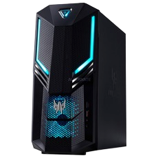

In de kleine maar zeer gedefinieerde Predator Orion 3000 ligt een monster op de loer dat zich graag wil bewijzen. De Acer Predator Orion 3000 (DG.E14EH.020) kan alle uitdagingen aan, of je nu wilt gamen, bewerken, streamen of iets heel anders. Dus geniet van een intense game-ervaring door de krachtige NVIDIA GeForce GTX 1660 Ti grafische kaart. Of neem even een pauze om wat werk te doen met de technische topprestaties van de Intel® Core™ i5-9400F processor en 16 GB DDR4 geheugen. Bewaar daarna al je data veilig op de 2 TB harde schijf. En start de volgende ronde windows 10 en je games weer extra snel op door de 256 GB SDD.